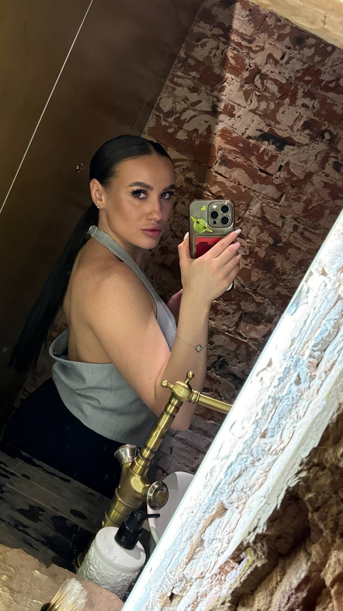
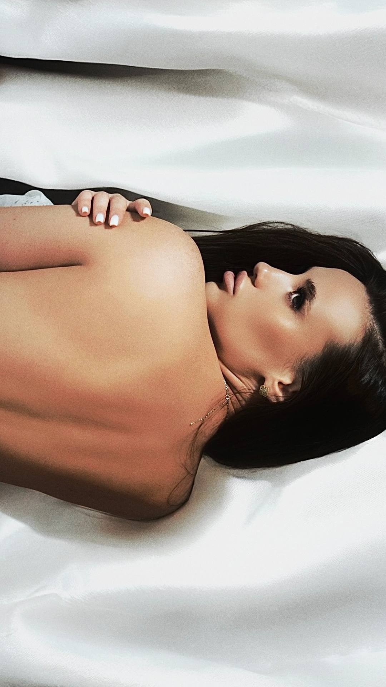
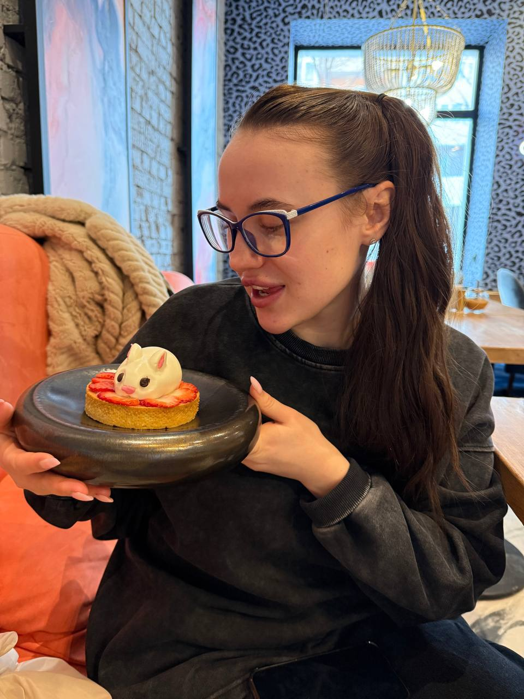
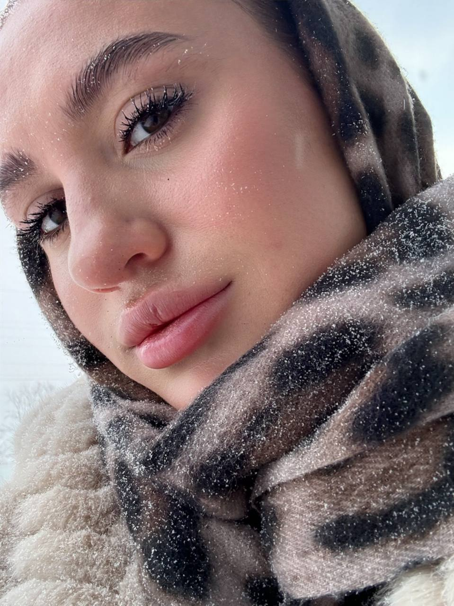

С чего все началось
Илья)
Илья, привет. С тобой блин, так давно не общались как показывает Instagram с 23 года скажи, пожалуйста, мне нужно я понимаю, что вообще че-то не в кассу, мне на чемпионат нужно из песни убирать маты, не пропускают из-за матов. Я могу тебя попросить не запикать мат, а вырезать, ну типа сделать как-то красиво, чтоб там было ну как-то плавно что ли. Не вот это вот как на телике. А типа красиво так подрезать. Я не знаю к кому еще обратиться. Я искала твой Telegram. У меня почему-то нет твоего номера. Не к кому больше обратиться
Привет
Да, конечно
В телеге кидай @lxrdrgnbrn
В телеге кидай @lxrdrgnbrn
Началось все, конечно, раньше, но я благодарен Богу, что ты тогда написала мне
Причины 1–11
- Твоя улыбка делает мир вокруг мягче и светлее.
- В твоих глазах живёт тихое, тёплое сияние.
- Твой голос звучит как нежная музыка, к которой хочется прислушиваться снова и снова.
- Твои губы – как первый глоток вина: тёплые, немного пьянящие и такие, к которым хочется возвращаться.
- Твои волосы напоминают шёлк ночи – мягкие, струящиеся и бесконечно красивые.
- Твоя кожа нежна, как лепесток розы на рассвете.
- Твои руки умеют дарить удивительное спокойствие.
- Твои плечи – место, где хочется остановить время и просто дышать.
- В каждой твоей детали живёт изящество.
- Ты прекрасна даже без украшений.
- Ты умеешь быть утончённой и живой одновременно.
Причины 12–22
- Твоя походка похожа на соблазнительный танец.
- Ты двигаешься так, будто сама создаёшь красоту вокруг.
- Твоя осанка – королевская и уверенная.
- В тебе есть внутренняя сила, которую невозможно не почувствовать.
- Ты красива как богиня.
- Твой аромат остаётся в памяти сердца навсегда.
- Когда ты смеёшься, ты излучаешь яркий свет.
- Твоё лицо – как картина, к которой хочется возвращаться снова и снова.
- Твоя мимика живая, нежная и невероятно выразительная.
- Ты красива в любом свете и в любое время.
- В тебе есть особая грация, которой нет ни у кого.

Причины 23–33
- В тебе живёт редкая женственность и большая сила.
- Твоя фигура – гармония линий и нежности.
- В твоём взгляде есть сильная необъяснимая магия.
- Ты умеешь околдовать одним словом.
- Твоя улыбка для меня – как самый любимый рассвет.
- Ты сияешь, когда радуешься.
- В твоих глазах будто живёт целая вселенная.
- Ты умеешь быть яркой и нежной одновременно.
- Твоя энергия мягкая и такая притягательная.
- Ты очаровательна даже в самых маленьких деталях.
- От тебя исходит сильная уверенность.
Причины 34–44
- В тебе чувствуется мудрость, которая делает тебя ещё красивее.
- Твои слова способны менять людей, заставлять их расти и двигаться дальше.
- Твоя искренность делает тебя по-настоящему красивой.
- Ты тонко чувствуешь людей.
- Ты умеешь поддержать тогда, когда это особенно нужно.
- Ты умеешь говорить правду мягко и бережно.
- Ты умеешь ждать и верить.
- В тебе есть терпение и внутренняя стойкость.
- Твои слова источают невероятное тепло.
- Ты умеешь прощать.
- Ты бережно хранишь то, что любишь.

Причины 45–55
- Ты умеешь вдохновлять.
- Ты умеешь замечать красоту даже в мелочах.
- В линиях твоего тела живёт естественная красота.
- Ты прекрасна и в простоте, и в роскоши.
- Ты умеешь быть одновременно соблазнительной и трепетной.
- Ты очаровательна даже тогда, когда просто молчишь.
- Ты очаровательна, когда смеёшься.
- Ты прекрасна, когда мечтаешь.
- Ты прекрасна, когда задумчива.
- Ты прекрасна даже в тихой грусти.
- И особенно прекрасна, когда счастлива.

Причины 56–66
- Ты умеешь превращать обычный день в особенный.
- Рядом с тобой даже тишина становится уютной.
- Ты невероятна в любой момент, в любом настроении, в любой ситуации.
- Твои решения очень мудры.
- Ты сильная, но остаёшься невероятно нежной.
- В тебе сочетаются и нежность и твёрдый характер.
- Ты умеешь держаться достойно в любой ситуации.
- Ты – моя муза.
- Ты научила меня любить.
- Ты – мой самый красивый сон.
- Ты – моя самая тёплая мысль.
Причины 67–77
- Ты – моё любимое утро.
- Ты – моя спокойная ночь.
- Ты – моё счастье.
- Ты – моё светлое «сейчас».
- Ты – моё нежное «всегда».
- Ты вдохновляешь меня на самые смелые подвиги.
- Ты – моё любимое чудо.
- Ты – девушка, которой восхищаются.
- Ты – девушка, которую хочется беречь.
- Ты – девушка, которую хочется обнимать бесконечно долго.
- Ты – девушка, которой хочется писать письма.

Причины 78–88
- Ты – девушка, рядом с которой мир становится мягче.
- Ты – девушка, которая освещает мой тёмный путь.
- Ты – девушка, рядом с которой сердце бьётся спокойнее.
- Ты – девушка, рядом с которой мысли становятся яснее.
- Ты – девушка, рядом с которой теплее любой день.
- Ты – девушка, рядом с которой верится в любовь.
- Ты – девушка, о которой хочется говорить только прекрасное.
- Ты – девушка, которую я люблю всем сердцем.
- Твоя нежность — как утренний ветер: едва заметна, но меняет всё.
- Твоё присутствие — как свет в окне, к которому хочется возвращаться.
- Ты умеешь быть тихим счастьем, которое греет сильнее огня.
Причины 89–100
- Ты — как тёплый дождь: после тебя всё расцветает.
- Ты — как любимая строка в книге: перечитываю всем своим сердцем.
- Ты — как вечерний свет: мягкий, спокойный, родной.
- Ты — как музыка без конца: хочется слушать тебя снова и снова.
- Ты — как нежная тайна, которую хочется беречь.
- Ты — как зимнее солнце: редкая, но самая тёплая.
- Ты — как спокойная пристань, где штормы затихают.
- Ты — как дыхание весны: с тобой мир оживает.
- Ты — как звезда над домом: всегда ведёшь меня к себе.
- Ты — как аромат любимых цветов: остаёшься в памяти.
- Ты — как тёплое письмо, которое храню у сердца.
- Ты — любовь, которую я ждал всю жизнь.
Причина 101
- Я влюбился в тебя, потому что ты стала моей самой красивой случайностью и самым важным выбором.
И это еще не все причины...
Я верю, что ты моя судьба. Меня тянет к тебе с невероятной силой. Я больше никого не смогу так полюбить. Я твой навечно...